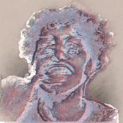

Baby Vaun
Official Links & Music Releases
Change Background
🔥 Latest Releases
My Way Out (Album)
Inna Demon (Single)
No Opps / All My Opps Are Dead
🎶 Music Platforms
Spotify – Artist Profile
Deezer – Baby Vaun
Apple Music – Baby Vaun
SoundCloud – Baby Vaun
📱 Social Media
Instagram – @babyvaunofficial
Twitter/X – @ayovzxxz
YouTube – @babyvaunofficial
TikTok – @therealbabyvaun
Gaming TikTok – @vauns.playtime
Shitpost TikTok – @himsvee